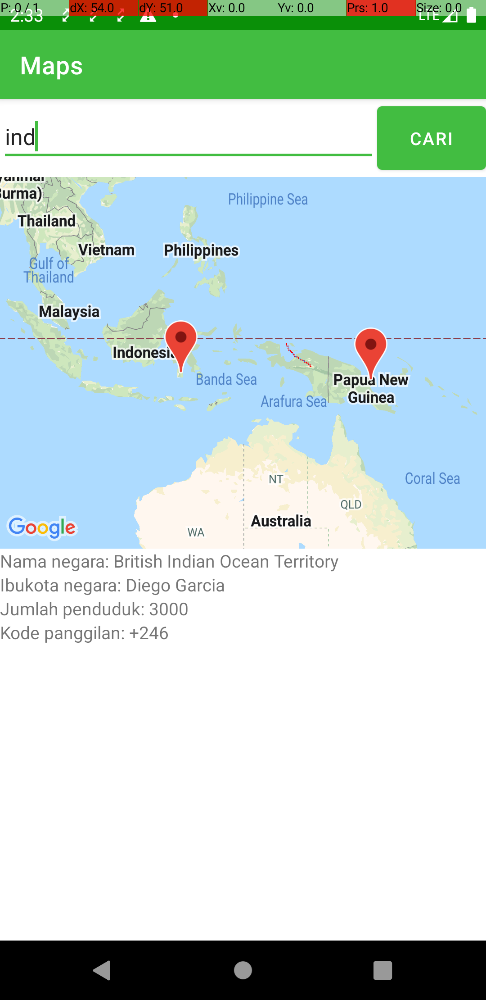

Please do not change or delete any views xml structure
To run this sample project you need to use this API: https://restcountries.com/#api-endpoints-v3-name
You also need to put the google map API key in the project.
(replace this key : PUT_GOOGLE_MAP_API_KEY_HERE)

You are asked to improve the page by the following tasks.
-
When the user search a country in the EditText, the map show the pin point in the map. Then display the native name, the capital city name, the population number, and the calling code in the given TextViews
-
Add View Improvement for loading, error state, and empty state.
-
Add Multiple marker capability so when result return more then one country (for example you search: "IND") and result returned is "Indonesia" and "India" then there will be multiple marker on the map. All the information in TextView will shows based on the last value of the results
-
Add Camera Animate Animating camera of the map to the selected country. When the result is showing more than one country, animate to the last one.